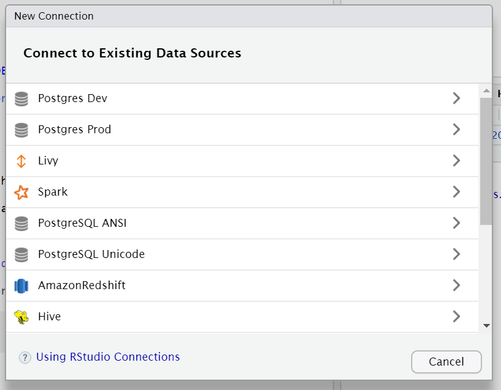
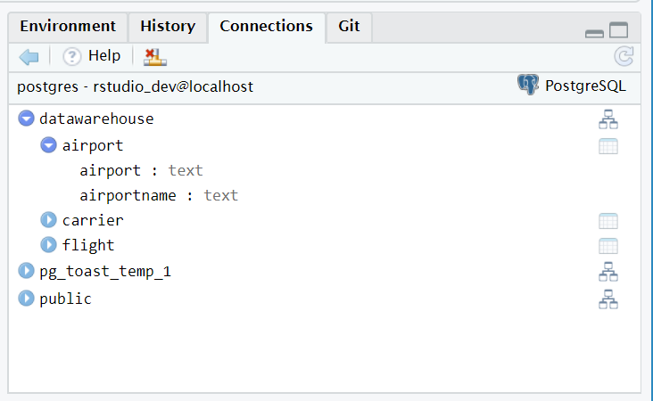

1 Access a database
1.1 Connect to a database
The simpliest way to connect to a database. More complex examples will be examined later in the class.
Click on the
ConnectionstabClick on the
New Connectionbutton

- Select
Postgres Dev

- Click OK

1.2 Explore the database using the RStudio IDE
Becoming familiar with the new interface for databases inside the RStudio IDE
Expand the
datawarehouseschemaExpand the
airporttableClick on the table icon to the right of the
airporttable(Optional) Expand and explore the other tables
Click on the disconnect icon to close the connection

1.3 List drivers and DSNs
Learn how to use the odbc package to get DB info from your machine
- To get a list of drivers available in the server
library(odbc)
odbcListDrivers()[1:2]## name attribute
## 1 PostgreSQL ANSI Description
## 2 PostgreSQL ANSI Driver
## 3 PostgreSQL ANSI Setup
## 4 PostgreSQL ANSI Debug
## 5 PostgreSQL ANSI CommLog
## 6 PostgreSQL ANSI UsageCount
## 7 PostgreSQL Unicode Description
## 8 PostgreSQL Unicode Driver
## 9 PostgreSQL Unicode Setup
## 10 PostgreSQL Unicode Debug
## 11 PostgreSQL Unicode CommLog
## 12 PostgreSQL Unicode UsageCount
## 13 AmazonRedshift Driver
## 14 Hive Driver
## 15 Impala Driver
## 16 Oracle Driver
## 17 PostgreSQL Driver
## 18 Salesforce Driver
## 19 SQLServer Driver
## 20 Teradata Driver- To see a list of DSNs available in the server
odbcListDataSources()## name description
## 1 Postgres Dev PostgreSQL
## 2 Postgres Prod PostgreSQL1.4 Connect to a database using code
Use the odbc package along with DBI to open a connection to a database
- Run the following code to connect
library(DBI)
con <- dbConnect(odbc::odbc(), "Postgres Dev")- Use
dbListTables()to retrieve a list of tables
dbListTables(con)## [1] "airport" "carrier" "flight"- Use
dbGetQuery()to run a quick query
odbc::dbGetQuery(con, "SELECT * FROM datawarehouse.airport LIMIT 10")## airport airportname
## 1 01A Afognak Lake, AK: Afognak Lake Airport
## 2 03A Granite Mountain, AK: Bear Creek Mining Strip
## 3 04A Lik, AK: Lik Mining Camp
## 4 05A Little Squaw, AK: Little Squaw Airport
## 5 06A Kizhuyak, AK: Kizhuyak Bay
## 6 07A Klawock, AK: Klawock Seaplane Base
## 7 08A Elizabeth Island, AK: Elizabeth Island Airport
## 8 09A Homer, AK: Augustin Island
## 9 1B1 Hudson, NY: Columbia County
## 10 1G4 Peach Springs, AZ: Grand Canyon West- Disconnect from the database using
dbDisconnect()
dbDisconnect(con)1.5 Connect to a database without a DSN
A more complex way of connecting to a database, using best practices: http://db.rstudio.com/best-practices/managing-credentials/#prompt-for-credentials
- Use the following code to start a new connection that does not use the pre-defined DSN
con <- dbConnect(
odbc::odbc(),
Driver = "PostgreSQL",
Server = "localhost",
UID = rstudioapi::askForPassword("Database user"),
PWD = rstudioapi::askForPassword("Database password"),
Port = 5432,
Database = "postgres"
)- When prompted, type in rstudio_dev for the user, and dev_user as the password
1.6 Secure credentials in a file
*Credentials can be saved in a YAML file and then read using the config package: http://db.rstudio.com/best-practices/managing-credentials/#stored-in-a-file-with-config*
Open and explore the
config.ymlfile available in your working directoryUse the config package to connect to the database
dw <- config::get("datawarehouse-dev")
con <- DBI::dbConnect(odbc::odbc(),
Driver = dw$driver,
Server = dw$server,
UID = dw$uid,
PWD = dw$pwd,
Port = dw$port,
Database = dw$database
)1.7 Use the OS credential store
The keyring package can be used to store the database credentials at the OS level
[Pending]